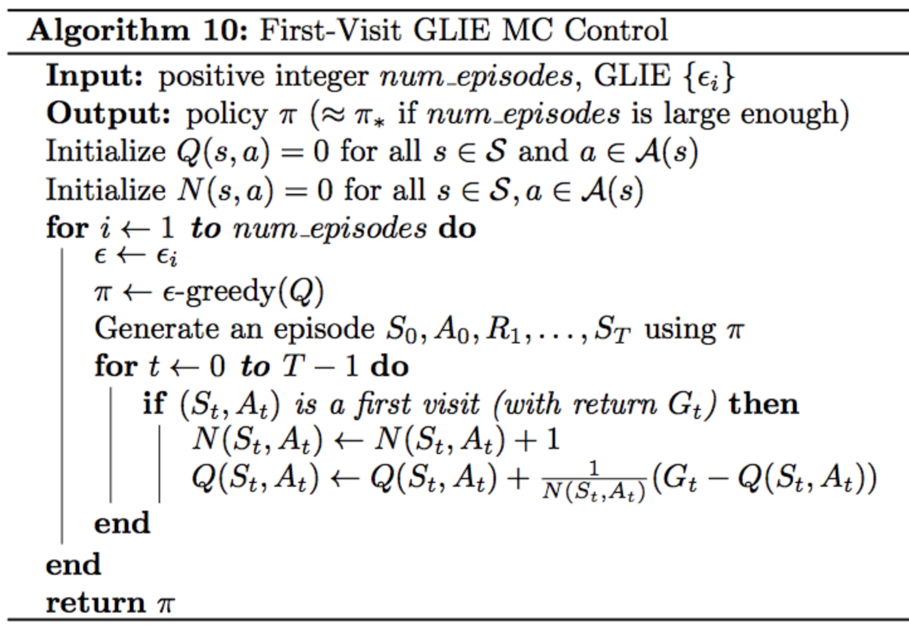
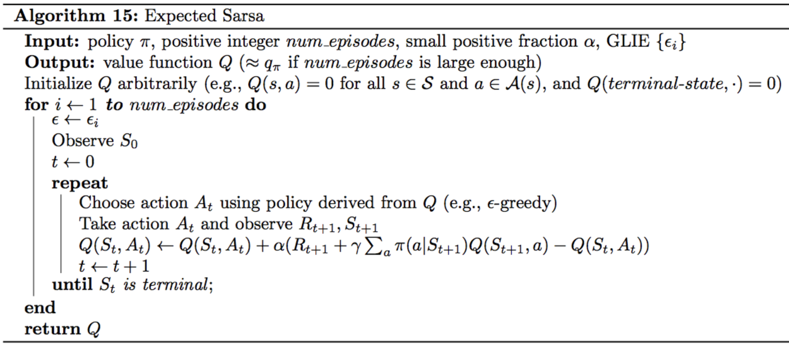
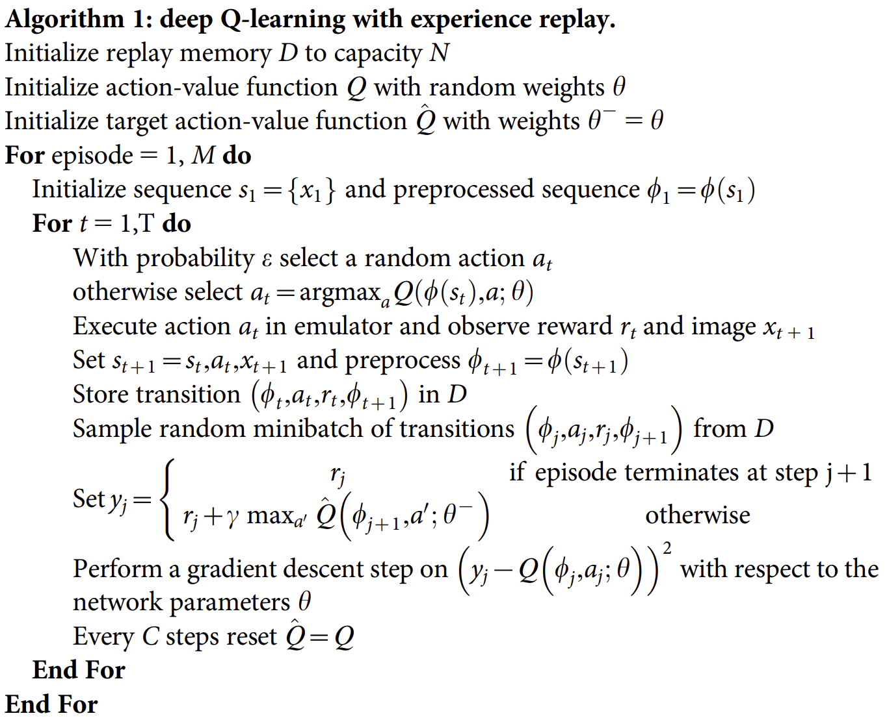

Deep Reinforcement Learning
A task is called episodic if it ends at some time step \(T\) when the game enters a terminal state. The episode is the sequence \(S_0, A_0, R_1, S_1, A_1, \ldots, R_T, S_T\). The opposite of an episodic task is a continuing task.
Reward hypothesis: All goals can be framed as the maximization of expected cumulative reward.
Markov Decision Process
The state space \(\mathcal{S}\) is the set of all nonterminal states. In continuing tasks this is equivalent to the set of all states. In episodic tasks \(\mathcal{S}^+\) is the set of all states. \(\mathcal{A}\) is the action space. \(\mathcal{A}(s)\) is the set of actions available in state \(s\). \(\mathcal{R}\) is the set of possible rewards.The expected discounted return is \(G_t = \sum_{k=1}^\infty \gamma R_{t+k}\).
In an MDP one-step dynamics are specified by: \(p(s', r|s, a) = \mathbb{P}(S_{t+1} = s', R_{t+1}=r | S_t=s \land A_t = a)\)
A deterministic policy is a function \(\pi \colon \mathcal{S → A}\). A stochastic policy is a function \(\pi\colon \mathcal{S\times A} → [0, 1]\).
The state-value function is a function \(v_\pi(s) = \mathbb{E}_\pi[G_t | S_t = s]\). The optimal state-value function is denoted \(v_\ast\).
A policy \(\pi'\) dominates a policy \(\pi\), denoted as \(\pi' \ge \pi\), if and only if $$ \forall s \in \mathcal{S}\colon \, v_{\pi'}(s) \ge v_{\pi}(s) $$ An optimal policy \(\pi_\ast\) satisfies \(\pi_\ast \ge \pi\) for all policies \(\pi\). Optimal policies are guaranteed to exist but may not be unique.
The action-value function is a function \(q_\pi(s, a) = \mathbb{E_\pi}[G_t | S_t = s, A_t = a]\) and yields the expected return if the agents starts in state \(s\), takes action \(a\), and then follows the policy \(\pi\). The optimal action-value function is denoted \(q^\ast\). An action-value function can simply be represented as a action \(\times\) value matrix.
Given an optimal action value function \(q^\ast\) we can find an optimal policy by setting \(\pi^\ast(s) = \arg \max_{a\in \mathcal{A}} q_\ast(s, a)\).
An \(\epsilon\)-greedy policy is a policy of the form $$ \pi(a|s) = \Bigg\{\begin{array}{lr} 1-\epsilon + \epsilon/|\mathcal{A}(s)|, & \text{if } a \text{ maximizes } Q(s,a)\\ \epsilon/|\mathcal{A}(s)| & \text{else} \end{array} $$ Control Problem: Estimate the optimal policy.
The Monte-carlo control method alternates between policy evaluation and policy improvement to converge to the optimal policy \(\pi^\ast\).
We can use first-visit MC or every-visit MC which estimate \(q_\pi(s, a)\) as the average of returns of the first visit to \((s, a)\) or all visits to \((s, a)\) respectively. Note: every-visit is biased whereas first-visit is not; every-visit has a lower MSE at first but first-visit is better in the limit

- every \((s, a)\) must be visited infinitely many times
- the policy converges to the greedy policy based on the action-value estimate \(Q\)
When specifying an \(\epsilon\)-greedy policy both of the above conditions are satisfied if \(\forall i\colon\epsilon_i > 0\) and \(e_i → 0\).

Two variations of MC control:- Incremental mean: update the Q table after every episode
- Constant alpha: use exponential averaging instead of (constant time) arithmentic mean

Bellman Equations
The four Bellman equations show that value functions satisfy certain recursive relationships.The Bellman Expectation Equation for \(v_\pi\) expresses the value of a state in the following way: $$ v_\pi(s) = \mathbb{E}_\pi[R_{t+1} + \gamma v_\pi(S_{t+1})|S_t = s] $$ The expectation can be rewritten as $$ v_\pi(s) = \sum_{s' \in S^+, r \in \mathcal{R}} p(s', r | s, \pi(s)) (r + \gamma v_\pi(s')) $$ for a deterministic policy \(\pi\) or as $$ v_\pi(s) = \sum_{s' \in S^+, r \in \mathcal{R}, a\in \mathcal{A}} \pi(a|s) p(s', r | s, a) (r + \gamma v_\pi(s')) $$ for a stochastic policy \(\pi\).
// TODO: add other three bellman equations, sections 3.5 and 3.6 of textbook
Temporal Difference Learning
While MC control methods update their estimates only after each episode, TD learning continuously amends its predictions.Sarsa, sarsamax and expected sarsa are all guaranteed to converge to the optimal action-value function \(q_\ast\) given that \(\alpha\) is sufficiently small and the GLIE conditions are met. In practice it is common to ignore GLIE conditions and still recover an optimal policy.
Sarsa and expected sarsa are on-policy methods whereas q-learning is an off-policy method. On-policy methods generally have better online performance.
Initializing Q values optimistically (to large values) can improve performance, see this paper.
Sarsa
The Sarsa(0) update rule is $$ Q(S_t, A_t) ← Q(S_t, A_t)(1-\alpha) + \alpha(R_{t+1} + \gamma Q(S_{t+1}, A_{t+1})) $$
Q-Learning / Sarsamax
Q-learning uses the \(\max_{a \in \mathcal{A}} Q(S_{t+1}, a)\) instead of \(Q(S_{t+1}, A_{t+1})\) which means that depending on which action achieves the maximum the update step may not even depend on the action the agent is taking in the next step. (Basically based on state-value function not action-value function)
Expected Sarsa
Expected Sarsa replaces the max term with an expectation based on the probability that each action gets selected under the policy.
See this paper for more details on expected sarsa.Continuous Spaces
To apply RL in continuous spaces we can use- Uniform-grid based discretization
- Discretization via Tile Coding
- generalizes better than uniform grid
-
Discretization via Coarse Coding
- sparser than tile coding
- can adjust degree of generalization vs resolution (and change smoothness of q-function)
- can user radial basis functions to implement continuous tile membership
- Function approximation (for V/Q functions)
- Linear function approximation (possibly with kernel functions like radial basis functions)
- Non-linear function approximation (neural nets)
Deep Q-Learning
DeepMind Atari: input 84x84 grayscale pixels * 4 frames; convnet outputs action; replay memory 1 mio frames; each selected action is played for k=4 timestepsDeep Q-Learning can suffer from two potentially harmful correlations:
- Correlation between sequential samples
- Correlation between Q-values for similar (state, action) pairs
which are addressed by experience replay and fixed Q-targets respectively.
Experience Replay: keeping a replay buffer and training on samples randomly drawn from this buffer allows us to learn from each (possibly computationally expensive) sample multiple times. Furthermore the random sampling prevents oscillations or catastrophic divergence due to correlation between sequential samples.
Experience replay can be seen as reducing the reinforcement learning problem to supervised learning.
Fixed-Q Targets address the issue that the Q-value estimate for a (state, action) pair is updated using another Q-value estimate. This is the Q-learning update rule: $$ \Delta w = \alpha(R + \gamma\max_a \hat q(S', a, w) - \hat q(S, A, w))\Delta_w \hat q(S, A, w) $$ In particular the update of \(w\) is dependent on the TD target which in turn is dependent on \(w\). Instead with we want a fixed Q-target parametrized by \(w^-\) that is frozen and only updated (softly?) every few steps: $$ \Delta w = \alpha(R + \gamma\max_a \hat q(S', a, w^-) - \hat q(S, A, w))\Delta_w \hat q(S, A, w) $$
See this video for a more detailed description.
This is the paper that introduced DQN.

Double Q-Learning
Double Q-Learning (or Double DQN = DDQN) addresses the issue of action value overestimation that can occur in basic DQN due to the unstable TD target: $$ \gamma\max_a \hat q(S', a, w) $$ Particularly in the early stages of training the action values in a given state can fluctuate wildly, taking the maximum of the already noisy values creates even more fluctuations and makes the network generally overestimate Q-values.For the exact reasoning see this paper.
Since the TD target can be re-expressed in the following way, $$ R + \gamma \hat q(S', \arg \max_a \hat q(S'a, w), w) $$ one way to reduces the overestimation is use different Q-networks/set of weights for both \(\hat q()\) calls above (i.e. one network for selecting the maximum value action and one network for evaluating the action's value).
When using fixed Q-targets we can simply use the \(w^-\) network for this purpose, the TD target is then: $$ R + \gamma \hat q(S', \arg \max_a \hat q(S'a, w), w^-) $$
For a detailed description of DDQN see this paper.
Prioritized Experience Replay
The goal of prioritized experience replay is to sample rare or more important experiences more often. It's similar to techniques for dealing with class-imbalances in supervised learning.A transition's priority is either proportional to the TD error \(p_i = |\delta_i|+\epsilon\) or rank based \(p_i = \frac{1}{\text{rank}(i)}\) , where \(\text{rank}(i)\) is the rank of transition \(i\) when transitions are sorted by their TD error \(\delta\). The probability of sampling a transition from the replay buffer is \(P(i) = \frac{p_i^\alpha}{\sum_k p_k^\alpha}\) where alpha controls the degree of prioritization.
For an efficient implementation of the replay buffer and interesting extensions of PER see the paper above.
Note that "the estimation of the expectation of the expected value through stochastic updates relies on those updates corresponding to the same distribution as its expectation". For this reason additional importance sampling weights (and an additional hyperparameter \(\beta\)) have to be introduced to the update equation.
Dueling DQN
In dueling DQN the state-value and advantage functions are estimated separately within a single network and then combined to receive the action-value estimates. Additional constraints are imposed to ensure that both sub-functions model their respective targets. (similar to residual nets because default advantage=0 is easily representable?)The dueling DQN paper uses DDQN with (and without) rank based prioritized experience replay and uses the expected sarsa update rule.
Policy Based Methods
Policy based methods are simpler, allow us to learn true stochastic policies and are better suited for continuous action spaces (In value based methods we would need to find the continuous action \(a\) that maximizes \(Q(s, a)\)).A trajectory is a state-action sequence of the form \(\tau = (s_0, a_0, s_1, a_1, \ldots, s_H, a_H, s_{H+1})\) where \(H\) is the time horizon. The return over a trajectory \(\tau\) is denoted by \(R(\tau) = r_1 + r_2 + \ldots + r_H+r_{H+1}\)
The expected return of a policy with parameters \(\theta\) is \(U(\theta) = \sum_\tau P(\tau | \theta) R(\tau)\).
Maximizing expected return over trajectories lets us search for optimal policies in both episodic and continuing tasks.